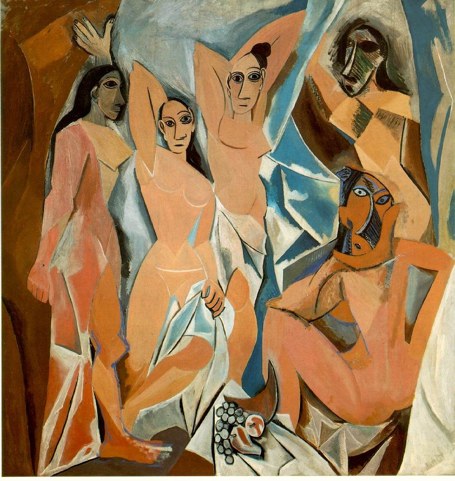

In
quest'opera Picasso, attraverso l'abolizione di qualsiasi prospettiva o
profondità, abolisce lo spazio: si simboleggia perciò una
presa di coscienza riguardo una terza dimensione non visiva, ma mentale.
Nella realizzazione delle figure centrali Picasso ricorda la scultura
iberica, mentre nelle due figure di destra è evidente l'influsso
delle maschere rituali dell'Africa. Soprattutto la figura in basso, con
gli occhi ad altezza
diversa,
la torsione esagerata del naso e del corpo, evidenzia come Picasso sia
giunto alla simultaneità delle immagini, cioè la presenza
contemporanea di più punti di vista.